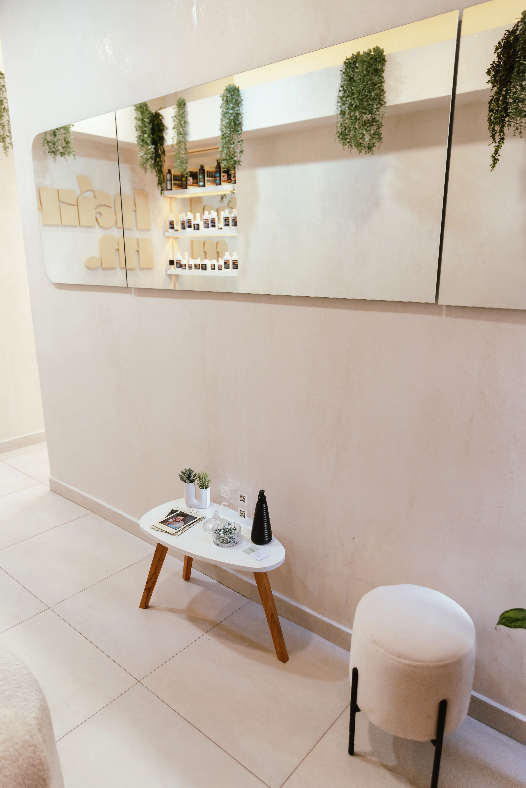
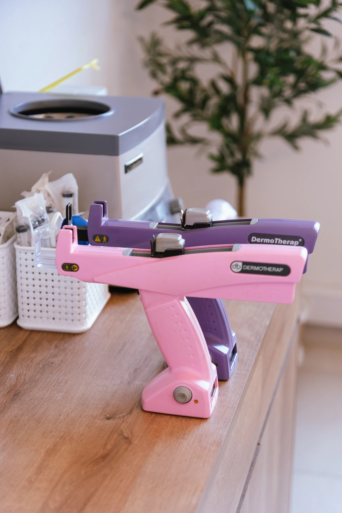
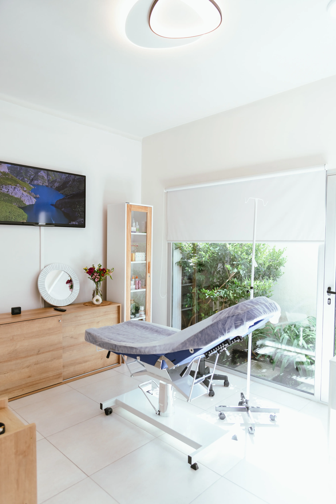
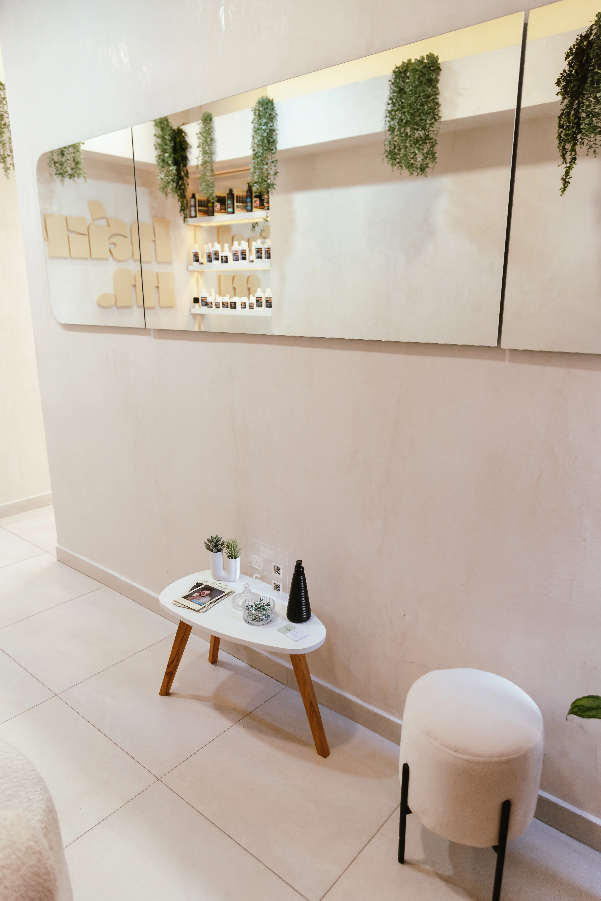
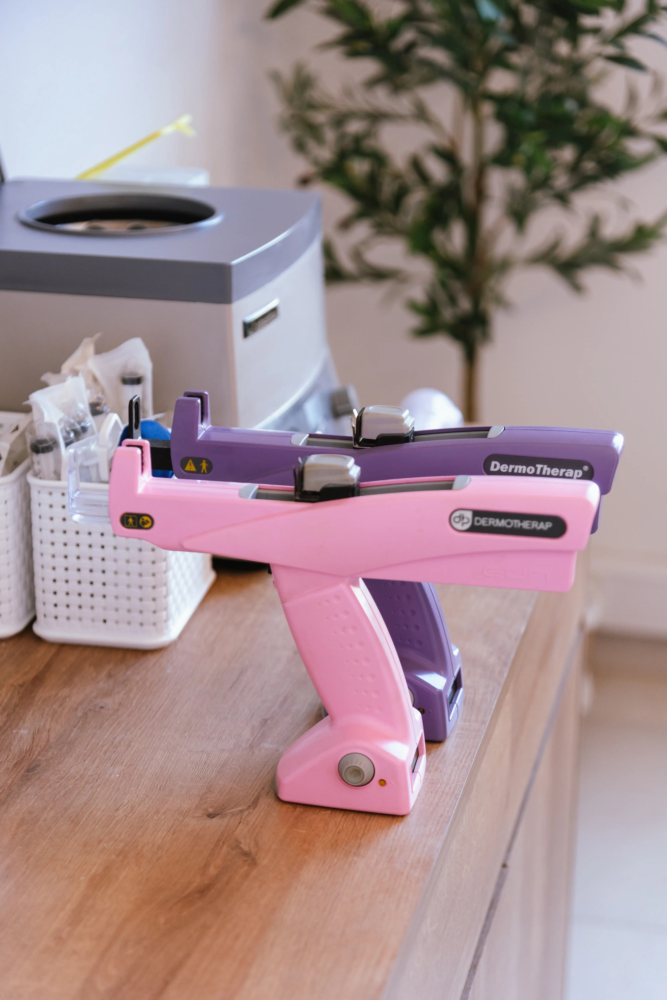
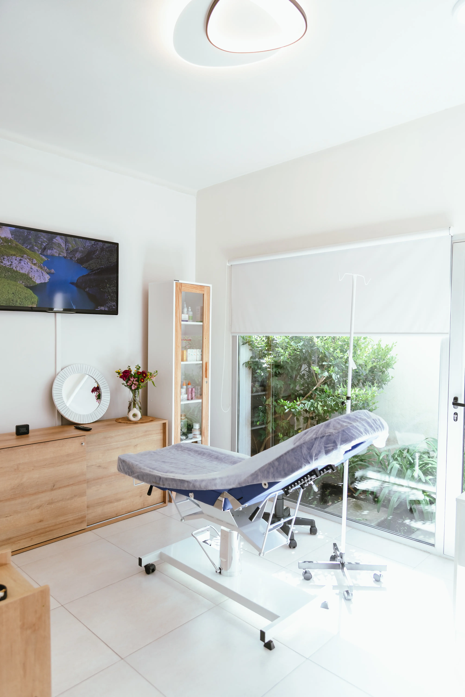
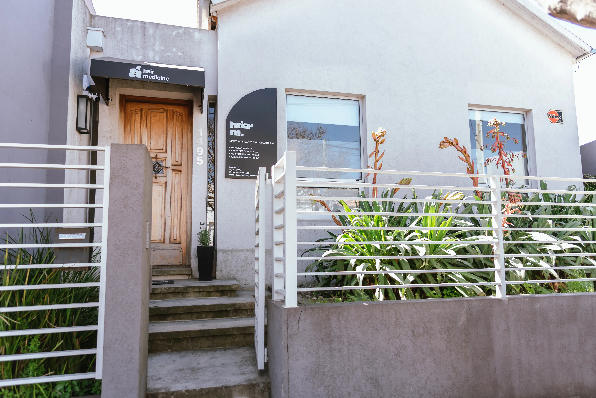
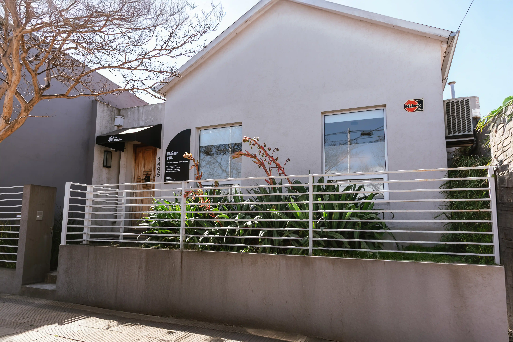
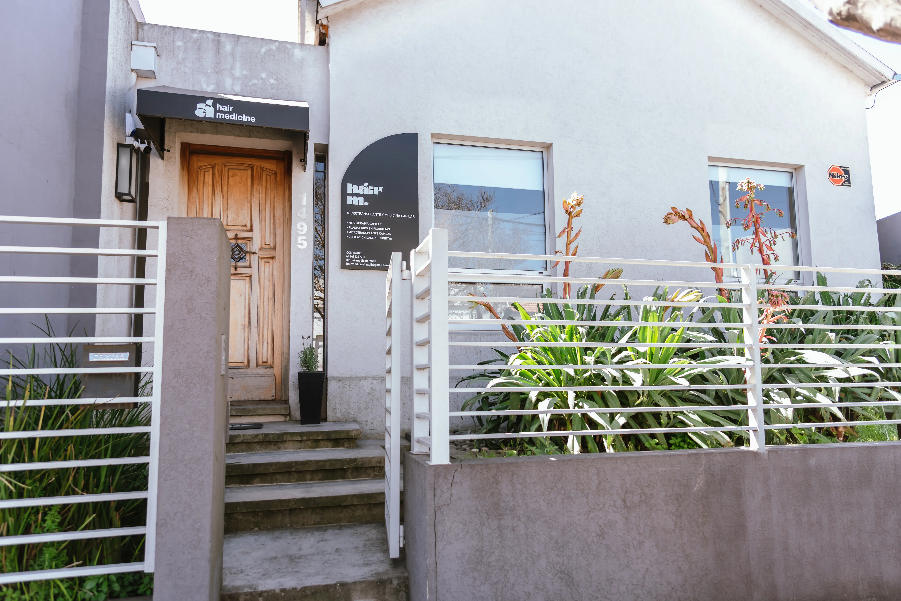
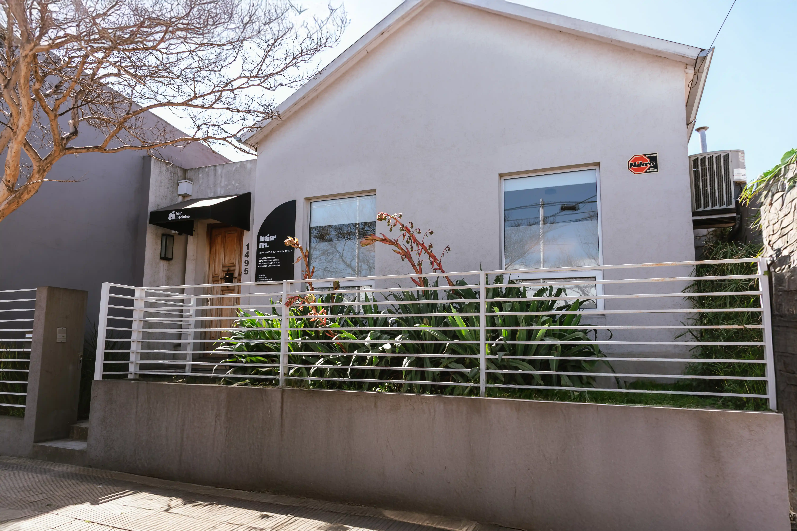

Tratamientos


Cirugia de Implante Capilar
Tecnica FUE-minimamente invasiva, resultados naturales y permanentes.
Mas infoNosotros
Somos el unico centro de medicina capilar de Tandil y la zona.
Contamos con mas de 15 años de experiencia, personal altamente capacitado y la mejor tecnologia en salud capilar.

Nuestro Equipo
Dr. Alfredo Maidana
Director Médico
Instr. Lucila Iturrioz
Jefa de área de implante Capilar
Instr. Luna Refoski
Área tratamientos e implante capilar
Franco Maidana
Área de atención al paciente
Aixa Iturrioz
Recepcion y gerencia administrativa.
Nuestro Consultorio
Contamos con un consultorio equipado con la mejor tecnología para garantizar la calidad de nuestros tratamientos.
 





 



Dudas Frecuentes
La mayoría de los procedimientos son indoloros. En los que requieren microinyecciones, solo se siente una leve molestia que se tolera muy bien. Además, contamos con anestesia local para mayor comodidad.
Depende del tratamiento y de cada paciente. Algunos requieren sesiones de mantenimiento, mientras que otros, como los implantes capilares, ofrecen resultados permanentes.
Los primeros resultados suelen verse entre los 2 y 3 meses. El proceso de fortalecimiento y crecimiento capilar continúa de manera progresiva.
Sí. Todos nuestros procedimientos están avalados científicamente y realizados por profesionales médicos especializados, en un entorno seguro y con tecnología de última generación.
¡Claro que sí! Los tratamientos se personalizan de acuerdo con la causa de la caída y las características de cada paciente, sin importar el género.
Sí. La mayoría de los tratamientos permiten retomar las actividades habituales de inmediato. Solo en el caso de implantes capilares se indican cuidados especiales durante los primeros días.
No siempre es necesario raparse por completo.
- En implantes capilares de gran extensión (cuando se cubre toda la zona superior o hay mucha pérdida) suele recomendarse rapar la cabeza para facilitar la extracción y colocación de folículos.
- En implantes parciales o de menor cantidad (como entradas o coronilla), muchas veces se puede hacer con el resto del cabello largo, rapando solo una pequeña franja en la zona donante, que luego queda disimulada.